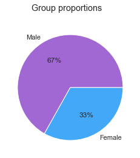
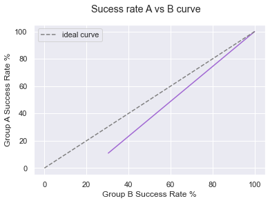

Getting Starting with Bias Mitigation¶
[5]:
# sys path
import sys
sys.path.append('../../')
[6]:
# Adult dataset
from holisticai.datasets import load_adult
from sklearn.model_selection import train_test_split
import pandas as pd
[7]:
# Dataset
data = load_adult()
# Dataframe
df = pd.concat([data["data"], data["target"]], axis=1)
[8]:
# Dataset
data = load_adult()
# Dataframe
df = pd.concat([data["data"], data["target"]], axis=1)
df.head()
[8]:
| age | workclass | fnlwgt | education | education-num | marital-status | occupation | relationship | race | sex | capital-gain | capital-loss | hours-per-week | native-country | class | |
|---|---|---|---|---|---|---|---|---|---|---|---|---|---|---|---|
| 0 | 25.0 | Private | 226802.0 | 11th | 7.0 | Never-married | Machine-op-inspct | Own-child | Black | Male | 0.0 | 0.0 | 40.0 | United-States | <=50K |
| 1 | 38.0 | Private | 89814.0 | HS-grad | 9.0 | Married-civ-spouse | Farming-fishing | Husband | White | Male | 0.0 | 0.0 | 50.0 | United-States | <=50K |
| 2 | 28.0 | Local-gov | 336951.0 | Assoc-acdm | 12.0 | Married-civ-spouse | Protective-serv | Husband | White | Male | 0.0 | 0.0 | 40.0 | United-States | >50K |
| 3 | 44.0 | Private | 160323.0 | Some-college | 10.0 | Married-civ-spouse | Machine-op-inspct | Husband | Black | Male | 7688.0 | 0.0 | 40.0 | United-States | >50K |
| 4 | 18.0 | NaN | 103497.0 | Some-college | 10.0 | Never-married | NaN | Own-child | White | Female | 0.0 | 0.0 | 30.0 | United-States | <=50K |
[20]:
from holisticai.bias.plots import group_pie_plot, success_rate_curve
p_attr = df['sex'] # protected attribute (race)
group_pie_plot(p_attr)
[20]:
<AxesSubplot:>

[10]:
group = ["sex"]
group_a = (df[group] == "Female")
group_b = (df[group] == "Male")
y = df['class'].replace({'<=50K':0, '>50K':1})
success_rate_curve(group_a, group_b, y)
[10]:
<AxesSubplot:xlabel='Group B Success Rate %', ylabel='Group A Success Rate %'>

[11]:
protected_variables = ["sex", "race"]
output_variable = ["class"]
X = pd.get_dummies(df.drop(protected_variables + output_variable, axis=1))
[12]:
data_ = [X, y, group_a, group_b]
# Train test split
dataset = train_test_split(*data_, test_size=0.2, shuffle=True)
train_data = dataset[::2]
test_data = dataset[1::2]
Putting all together¶
[21]:
def preprocessed_dataset_load_adult():
# Dataset
data = load_adult()
# Dataframe
df = pd.concat([data["data"], data["target"]], axis=1)
group_a = (df["sex"] == "Female")
group_b = (df["sex"] == "Male")
y = df['class'].replace({'<=50K':0, '>50K':1})
protected_variables = ["sex", "race"]
output_variable = ["class"]
X = pd.get_dummies(df.drop(protected_variables + output_variable, axis=1))
dataset = train_test_split(*data_, test_size=0.2, shuffle=True)
train_data = dataset[::2]
test_data = dataset[1::2]
return train_data, test_data
O Kernel falhou ao executar o código na célula atual ou em uma célula anterior. Examine o código nas células para identificar uma possível causa da falha. Clique <a href="https://aka.ms/vscodeJupyterKernelCrash">aqui</a> para obter mais informações. Consulte o <a href='command:jupyter.viewOutput'>log</a> do Jupyter para obter mais detalhes.
Training Simple Binary Classification¶
[16]:
from sklearn.linear_model import LogisticRegression
train_data , test_data = preprocessed_dataset_load_adult()
x,y, group_a, group_b = train_data
model = LogisticRegression()
model.fit(x,y)
x,y, group_a, group_b = test_data
y_pred = model.predict(x)
[17]:
from utils import classification_efficacy_metrics
classification_efficacy_metrics(y_pred, y)
[17]:
| Value | |
|---|---|
| Metric | |
| Accuracy | 0.796397 |
| Balanced accuracy | 0.617471 |
| Precision | 0.721219 |
| Recall | 0.268375 |
| F1-Score | 0.391185 |
[19]:
from holisticai.bias.metrics import classification_bias_metrics
classification_bias_metrics(group_a, group_b, y_pred, y)
[19]:
| Value | Reference | |
|---|---|---|
| Metric | ||
| Statistical Parity | -0.049244 | 0 |
| Disparate Impact | 0.540413 | 1 |
| Four Fifths Rule | 0.540413 | 1 |
| Cohen D | -0.172039 | 0 |